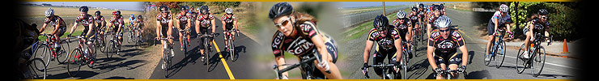

Sacramento Golden Wheelmen
 The Sacramento Golden Wheelmen (SGW), founded in 1973, is a premier bicycle racing club in the Sacramento Valley. Our club is licensed by the United States Cycling Federation which is affiliated with the U.S. Olympic Committee under the USA Cycling umbrella. Some of our past members have gone on to become national champions, representing our country in the Olympics and World Championships. These great achievements did not come about without the grass-roots efforts of our club and supportive sponsors. The Sacramento Golden Wheelmen are incorporated in the State of California as a non-profit charitable organization with the mission of furthering the Olympic sport of bicycle racing. For more information, send us an email: Information - info@sgwracing.com Our President, Tripp - president@sgwracing.com |
Contact: info@sgwracing.com
© 2011 Sacramento Golden Wheelmen & Seneb Design - all rights reserved.